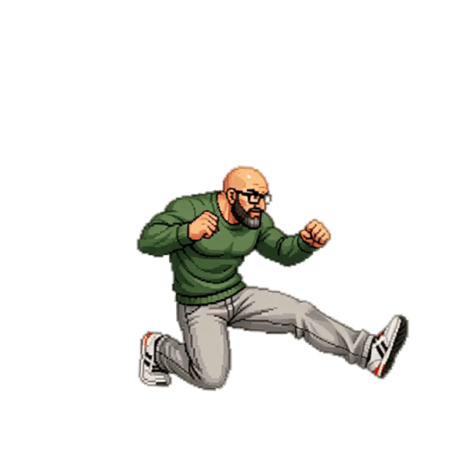
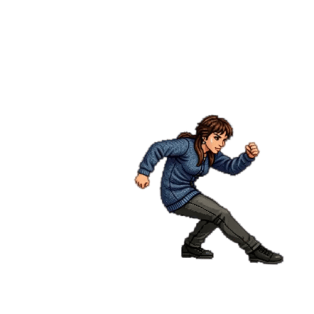
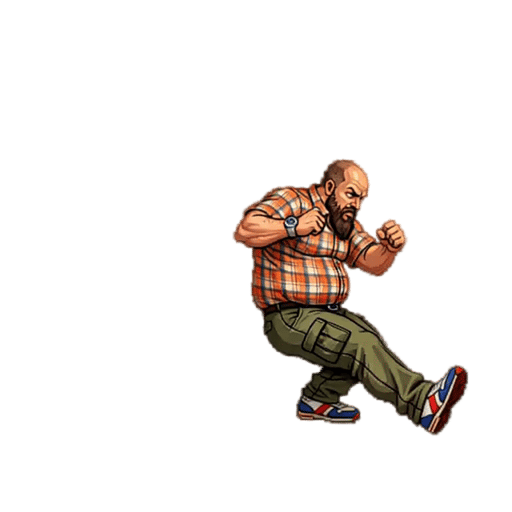
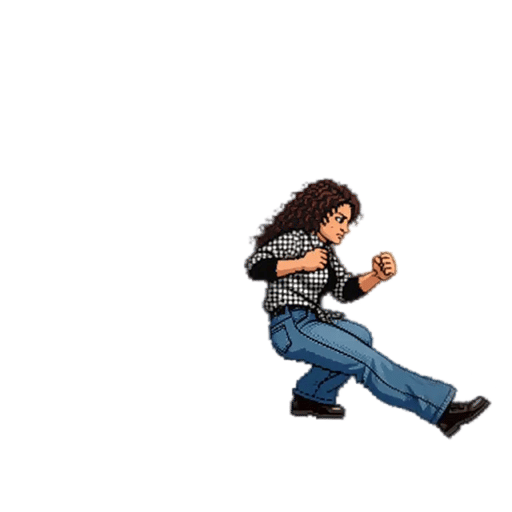
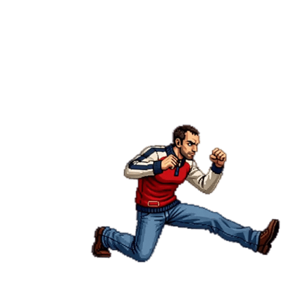
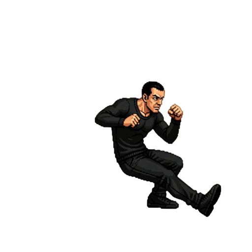
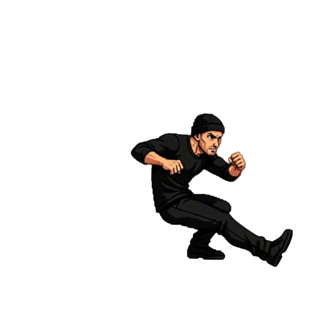
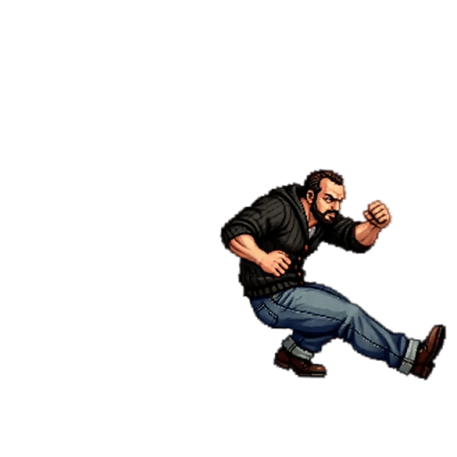
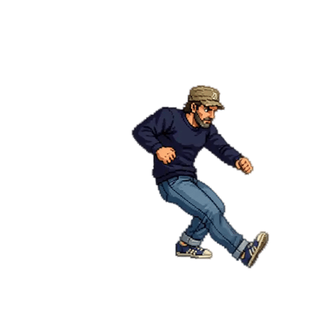

Apri la mossa nella demoCalcio leggero basso · Timing
Aggiornamento 23 novembre 2026. Nove personaggi. Stesso timing del Calcio leggero: la posa scelta di massima estensione inizia a 300 ms e il ciclo termina a 600 ms a velocità 1×. Durate variabili prima e dopo il marcatore, senza cambiare ordine o pixel dei frame.
Gli spritesheet contengono già il recupero in guardia accovacciata e sono eseguiti solo in avanti. Loop attivo per default. Versioni trimmed selezionate quando presenti; per Oscar è esportato una sola volta l’intervallo salvato 0–17 del foglio da 30 frame. Le pose estese adiacenti possono differire di pochi pixel: il report mostra il primo frame della massima estensione osservata.
175 celle RGBA confrontate con i PNG sorgente dopo l’esportazione: nessuna modifica a dimensioni, margini interni o scala. Nessuna generazione AutoSprite, 0 crediti.
Controllo alpha: esaminati i 175 fotogrammi selezionati, con confronto visivo delle pose e dei casi sospetti su fondo bianco, nero e canale alpha. Non sono emersi buchi evidenti nei corpi analoghi a quelli riscontrati sui pugni di Marsan; bordi sfumati e spazi naturali tra gli arti sono conservati. Confronto alpha dei nove personaggi.
Scarica i timing CSV
| Personaggio | Impatto | Frame (da 1) | Impatto | Totale | Durata frame prima / dopo | Intervallo sorgente (da 0) | Versione |
|---|
| ALBERTO |  | 5 / 13 | 300 ms | 600 ms | 75.00 / 33.33 ms | 0–12 | Trimmed |
|---|
| Elisa |  | 7 / 18 | 300 ms | 600 ms | 50.00 / 25.00 ms | 0–17 | Trimmed |
|---|
| FABIO-CLARA |  | 4 / 15 | 300 ms | 600 ms | 100.00 / 25.00 ms | 0–14 | Trimmed |
|---|
| FRA-TAVARONE |  | 7 / 16 | 300 ms | 600 ms | 50.00 / 30.00 ms | 0–15 | Trimmed |
|---|
| MARSAN |  | 9 / 18 | 300 ms | 600 ms | 37.50 / 30.00 ms | 0–17 | Trimmed |
|---|
| Oscar |  | 11 / 32 | 300 ms | 600 ms | 30.00 / 13.64 ms | 9–40 | Trimmed |
|---|
| PEPPO |  | 10 / 24 | 300 ms | 600 ms | 33.33 / 20.00 ms | 0–23 | Trimmed |
|---|
| PIPPO |  | 8 / 20 | 300 ms | 600 ms | 42.86 / 23.08 ms | 0–19 | Trimmed |
|---|
| SBOZ |  | 8 / 19 | 300 ms | 600 ms | 42.86 / 25.00 ms | 0–18 | Trimmed |
|---|